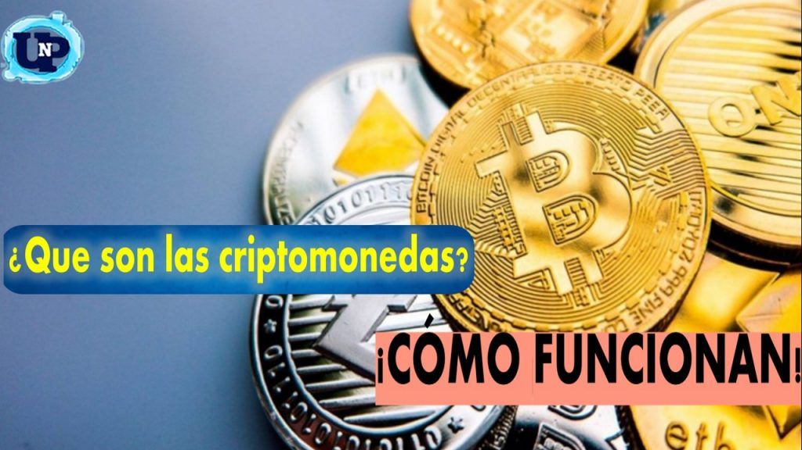
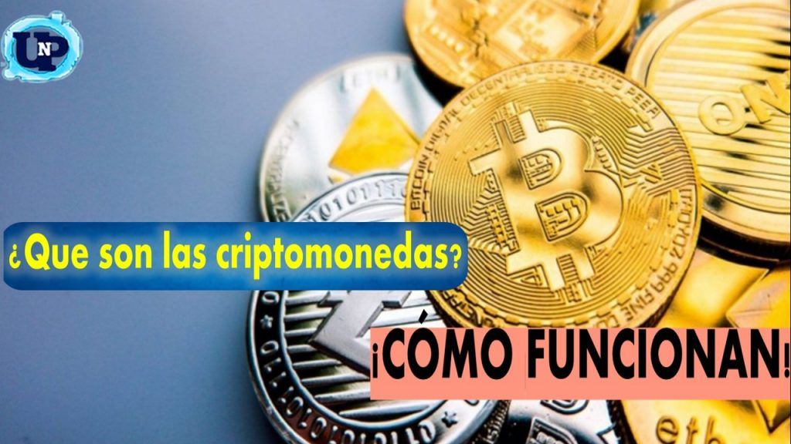

Mi nombre es Omar Albino, soy el #2 del curso 4toE de informatica, En esta pagina daremos la introduccion al tema de las criptomonedas, y para iniciar debemos hacernos la pregunta...
¿QUE SON LAS CRIPTOMONEDAS?
 

DEFINICION DE CRIPTOMONEDAS
Las criptomonedas son formas de moneda digital que utilizan criptografía para garantizar la seguridad de las transacciones y controlar la creación de nuevas unidades. La criptografía es un método de encriptación que se utiliza para asegurar las transacciones y controlar la creación de nuevas unidades. Las criptomonedas funcionan en una red descentralizada de computadoras, conocida como blockchain, que registra y verifica todas las transacciones de forma segura y transparente.
Bitcoin fue la primera criptomoneda, creada en 2009 por una persona o grupo de personas bajo el seudónimo de Satoshi Nakamoto. Desde entonces, se han creado miles de criptomonedas adicionales, cada una con sus propias características y propósitos.
USO DE LAS CRIPTOMONEDAS
Las criptomonedas se utilizan principalmente como medio de intercambio en transacciones en línea, inversiones, remesas internacionales y como activos digitales.
Las criptomonedas, como Bitcoin y Ethereum, se utilizan como medios de pago, inversión y trading, y facilitan remesas y transferencias internacionales rápidas y económicas. Además, impulsan la innovación a través de contratos inteligentes y las finanzas descentralizadas (DeFi), permitiendo préstamos y trading sin intermediarios. Los tokens no fungibles (NFTs) están transformando la propiedad digital, mientras que criptomonedas centradas en la privacidad, como Monero, ofrecen transacciones anónimas. Estas monedas digitales democratizan el acceso financiero, permiten microtransacciones y sirven como protección contra la inflación, especialmente en economías inestables. Sin embargo, enfrentan desafíos regulatorios y de adopción.
CARACTERISTICAS DE LAS CRIPTOMONEDAS:
ALGUNOS DATOS CURIOSOS DE CRIPTOMONEDAS:
ORIGEN ANONIMO
La identidad del creador original de Bitcoin, conocido bajo el seudónimo de Satoshi Nakamoto, sigue siendo un misterio. Nakamoto publicó el whitepaper de Bitcoin en 2008 y minó el primer bloque de la cadena de bloques de Bitcoin, conocido como "bloque génesis", en 2009. Sin embargo, desde entonces se ha mantenido en el anonimato y su verdadera identidad nunca ha sido revelada.
SATOSHI NAKAMOTO POSEE UNA GRAN CANTIDAD DE BITCOIN:
Se estima que Satoshi Nakamoto minó alrededor de 1 millón de bitcoins en los primeros días de la red Bitcoin. A la tasa actual, esto lo convertiría en una de las personas más ricas del mundo. Sin embargo, Nakamoto nunca ha movido estos bitcoins y su billetera permanece inactiva desde entonces.
CRIPTOMONEDAS PERDIDAS:
Se estima que alrededor del 20% de todos los bitcoins existentes se consideran "perdidos" de forma permanente. Esto incluye bitcoins que se perdieron debido a claves privadas perdidas o billeteras inaccesibles, así como bitcoins enviados a direcciones que ya no son accesibles. Este fenómeno ha llevado a la creación del término "criptomonedas zombie" para describir monedas digitales que parecen estar "muertas" en la cadena de bloques.